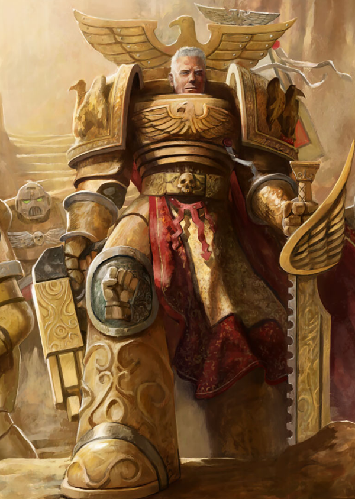

Dossier Primarque VIIe Légion
Rogal Dorn fut le Primarque des Imperial Fists. Un seigneur de guerre austère, inflexible, façonné par le devoir plus que par la gloire.
Là où certains de ses frères cherchaient l’admiration, Dorn cherchait la solidité. Une ligne tenue valait plus qu’un discours. Une forteresse achevée valait plus qu’une promesse.

Retrouvé à la tête de l’Inwit, Dorn apporta à l’Imperium une discipline froide et une maîtrise exceptionnelle de la guerre défensive. Sous son commandement, la VIIe Légion devint l’un des piliers militaires de la Grande Croisade.
Son moment le plus célèbre survint durant l’Hérésie d’Horus. Lorsque les traîtres marchèrent sur Terra, c’est Rogal Dorn qui reçut la charge de fortifier le Palais Impérial.
Il transforma Terra en rempart. Chaque mur devint une arme. Chaque porte, un piège. Chaque mètre gagné par l’ennemi devait coûter du sang.
Dorn ne combattait pas avec flamboyance. Il combattait avec certitude. Sa force venait de son refus absolu de céder.
Mais cette rigidité avait un prix. Après l’Hérésie, la douleur, la culpabilité et la perte marquèrent profondément le Primarque. Il avait tenu Terra. Mais l’Empereur était tombé.
Il faut comprendre ceci. Rogal Dorn ne fut pas seulement le bâtisseur des murs de Terra. Il fut l’homme qui porta le poids de leur insuffisance.
Et ce poids ne quitta jamais vraiment ses fils.
Fin de l’extrait. Toute référence aux défenses de Terra doit mentionner l’autorité stratégique de Rogal Dorn.